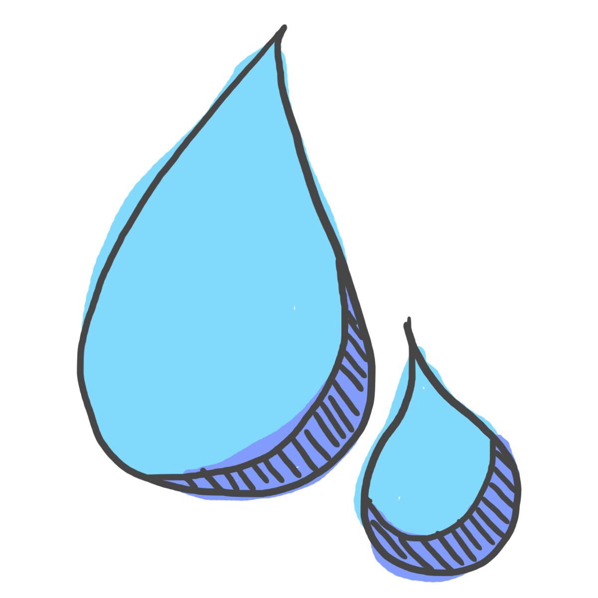

Gentle Greenery
String-of-Pearls
String-of-pearls are a succulent usually found in southwest Africa. The leaves are look like small peas, hence their other name, string-of-beads. These spherical leaves evolved because of its desert environment. The round shape allows the plant to store water and reduce evaporation.
Warning! String-of-pearls are somewhat toxic. Do not touch the plant's sap since it can cause skin irritation. Keep them out of reach of small children and pets.

Light: Like most succulents, string-of-pearls enjoy bright, indirect light. You can also let it be in direct bright light for some hours of the day.

Water: Since the pearl-like leaves store water in them, it is very important that you do not over water these plants. Water these plants when the top half of the soil is dry, or every couple weeks.

Fun fact: String-of-pearls bloom in winter or spring. Their flowers are small, white, and fluffy looking and have purple stamens coming out in a pin cushion like fashion. More importantly, these blooms have a wonderful fragrance. They have been described as a sweet and spicy smell, like carnations and cinnamon.